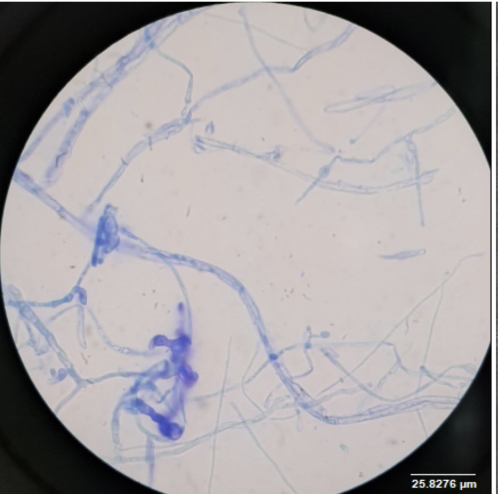
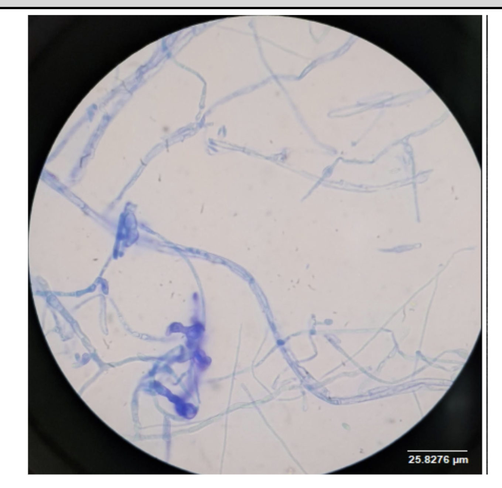

La muestra CAM A fue observada mediante la técnica de impronta con azul de lactofenol a 40X y 100X.
Se identificaron hifas septadas de morfología filamentosa, con un diámetro promedio de 2.00 ± 0.36 µm y un ángulo de ramificación aproximado de 49.39°. Las ramificaciones presentaron una longitud de 28.87 ± 15.22 µm.
Se observaron estructuras esporales de forma circular, con diámetro aproximado de 0.46 µm y pared celular lisa. Los conidióforos presentaron una longitud de 21.68 ± 11.25 µm y un diámetro basal de 5.094 ± 0.48 µm, con superficie lisa.
Se observaron hifas septadas, sin características cenocíticas. Durante la tinción, las estructuras mostraron una coloración azul, permitiendo su diferenciación.
No se observaron estructuras reproductivas accesorias ni estructuras especiales.